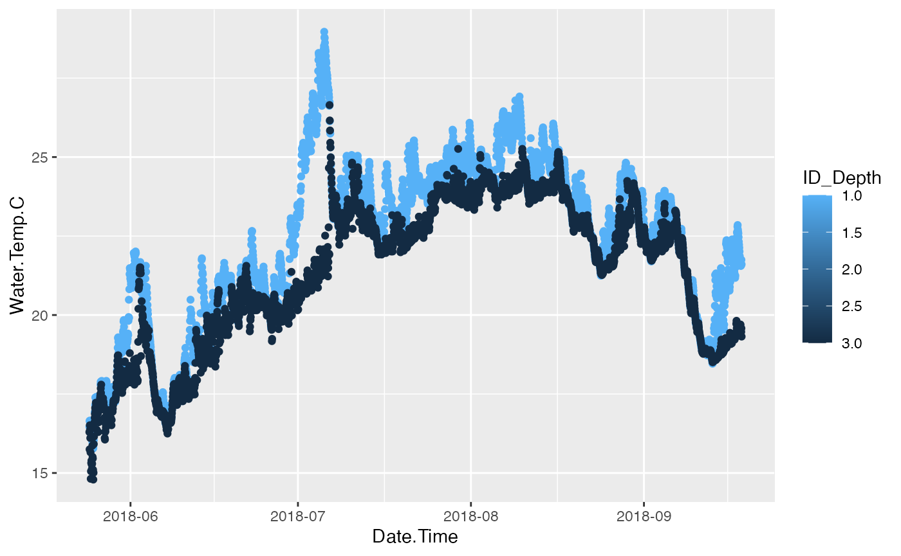

vignettes/Vignette_Lakes.Rmd
Vignette_Lakes.RmdContDataQC was created by Tetra Tech, Inc. for USEPA in 2017 to meet the needs of the Regional Monitoring Networks to apply a minimum level of quality control to the continuous monitoring data they were collecting.
It is envisioned that this library can be a living package and will add additional functions and routines in the future.
Many of the examples in this vignette are included in the examples in the corresponding functions. Each function in the ContDataQC library includes example data.
The typical user of this package is envisioned as a user of Hobo or other continuous data loggers. Measured parameters are water temperature, sensor depth, air temperature, water pressure, and air pressure. The typical user will retrieve data from their data logger using Hoboware. Once the data is extracted from the logger and save some minimal cleanup to the column heades is performed before using the ‘ContDataQC’ R library.
There is a second type of user for this package and that is of the user with data loggers in lakes (or other waterbodies) with sensors at different depths.
Many of the package features work equally well with these data types with a few modifications.
It is envisioned that a user of data at different depths at the same location can use the QC function by working with each depth file separately. The “formatHobo” and “QC” steps will accommodate the lake profile data (assuming the SiteID is specified as below in the next section).
The ContDataQC package is set up to handle a single “SiteID” field. This is not appropriate for measurements at different depths for a single location. To work around this the package uses a delimiter, “–”, between the SiteID and depth (units optional). For example “Ellis–1.0m” would be entered into the “SiteID” field.
The Format function works the same on depth profile data files.
# Packages
library(ContDataQC)
# Parameters
# Selection.Operation <- c("GetGageData","QCRaw", "Aggregate", "SummaryStats")
# Selection.Type <- c("Air","Water","AW","Gage","AWG","AG","WG")
# Selection.SUB <- c("Data0_Original"
# , "Data1_RAW","Data2_QC","Data3_Aggregated","Data4_Stats")
myDir.BASE <- tempdir()
# Function Inputs
fn1 <- "Ellis--1.0m_Water_20180524_20180918.csv"
fn2 <- "Ellis--3.0m_Water_20180524_20180918.csv"
myFiles <- c(fn1, fn2)
myDir.import <- file.path(myDir.BASE, "Data0_Original")
myDir.export <- file.path(myDir.BASE, "Data1_RAW")
myFormat = "YMD"
# Run Function (with default config)
formatHobo(myFiles, myDir.import, myDir.export, fun.HoboDateFormat=myFormat)The QC function works the same on depth profile data files.
# Packages
library(ContDataQC)
# Parameters
Selection.Operation <- c("GetGageData"
,"QCRaw"
, "Aggregate"
, "SummaryStats")
Selection.Type <- c("Air","Water","AW","Gage","AWG","AG","WG")
Selection.SUB <- c("Data0_Original"
, "Data1_RAW"
, "Data2_QC"
, "Data3_Aggregated"
, "Data4_Stats")
myDir.BASE <-
# Files
fn1 <- "Ellis--1.0m_Water_20180524_20180918.csv"
fn2 <- "Ellis--3.0m_Water_20180524_20180918.csv"
# QC Data
myData.Operation <- "QCRaw" #Selection.Operation[2]
myFile <- c(fn1, fn2)
myDir.import <- file.path(myDir.BASE, "Data1_RAW")
myDir.export <- file.path(myDir.BASE, "Data2_QC")
myReport.format <- "html"
ContDataQC(myData.Operation
, fun.myDir.import = myDir.import
, fun.myDir.export = myDir.export
, fun.myFile = myFile
, fun.myReport.format = myReport.format)The file version of the aggregate function will merge all file provided in the fun.myFile parameter passed to ContDatQC(). The resulting file will have the name of the first file with “Append_X”. Where “X” will be the number of files that were aggregated.
# Packages
library(ContDataQC)
myDir.BASE <- tempdir()
# Files
myFile <- c("QC_Ellis--1.0m_Water_20180524_20180918.csv"
, "QC_Ellis--3.0m_Water_20180524_20180918.csv")
# Aggregate Data
myData.Operation <- "Aggregate" #Selection.Operation[3]
myFile <- c("QC_Ellis--1.0m_Water_20180524_20180918.csv"
, "QC_Ellis--3.0m_Water_20180524_20180918.csv")
myDir.import <- file.path(myDir.BASE, "Data2_QC")
myDir.export <- file.path(myDir.BASE, "Data3_Aggregated")
myReport.format <- "html"
ContDataQC(myData.Operation
, fun.myDir.import = myDir.import
, fun.myDir.export = myDir.export
, fun.myFile = myFile
, fun.myReport.format = myReport.format)An additional function, “ParseID”, is provided to parse the combined ID string with SiteID, depth, and units into 3 separate fields. The original SiteID is copied to SiteID_original and then the SiteID, depth, and depth_units are then populated. The configuration file contains the desired delimiter (defaulted as “–”).
myDir.BASE <- tempdir()
# Parse ID string and save
dir_files <- file.path(myDir.BASE, "Data3_Aggregated")
setwd(dir_files)
fun.myFileName.In <- "DATA_QC_Ellis--1.0m_Water_20180524_20180918_Append_2.csv"
fun.myFileName.Out <- "Ellis_FixedID.csv"
fun.ColName.ID <- "SiteID"
fun.Delim <- "--"
fun.ParseID(fun.myFileName.In
, fun.myFileName.Out
, fun.ColName.ID
, fun.Delim)Once the depth profiles have been individually QCed and then Aggregated the user can analyse the data from a single file. Example plot is below.
# Example code to Plot data
library(ggplot2)
# Read file
df_Ellis <- read.csv(file.path(system.file("extdata", package="ContDataQC")
, "Ellis.csv"))
df_Ellis[, "Date.Time"] <- as.POSIXct(df_Ellis[, "Date.Time"])
# Plot, Create
p <- ggplot(df_Ellis, aes(x = Date.Time, y = Water.Temp.C, group = ID_Depth)) +
geom_point(aes(color = ID_Depth)) +
scale_color_continuous(trans = "reverse") +
scale_x_datetime(date_labels = "%Y-%m")
# Plot, Show
print(p)